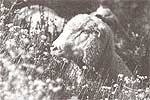

BITS & PIECES
Killer weeds are swarming north.
I t can grow up to six feet high, and it sprouts fragrant little yellow apples so attractive that some poor traveler, considering it ornamental, may have brought it from its native Brazil and planted it in a Florida garden or yard. Little did the traveler know, the tropical soda apple (doesn't it even sound like something you'd like to have in your yard?), behaves badly when it's away from home. If Florida cattle ranchers could find that ornamental plant lover or the poor hiker who tracked a soda apple seed into Florida from Brazil on his sneakers, there's no telling what they might do.
According to University of Florida range scientists, since it was first discovered there in 1988, the tropical soda apple has invaded rangeland and crowded out native plants at alarming rates. It has surpassed scientists' usual condemnations of obnoxious or harmful weeds as "noxious plants" and is being labeled "a biological pollutant." The weed claimed 25,000 acres of Florida in 1990, and by 1993 it had taken 400,000 acres. "It's exploded so fast, it's just unreal," comments Jeff Mullahey, University of Florida range scientist. The weed has spread from Florida to Georgia and Mississippi. "We think it will grow as far north as Virginia. It may make it into parts of Oklahoma, but based on what I saw in Brazil, probably Kansas and Nebraska are too cold," Mullahey says.
As if this massive loss of land were not enough, the fruit also contains a chemical that has been used pharmaceutically in steroids and birth control, and there is some possibility that the fruit may affect reproduction in animals that consume it. Mullahey also claims that two horses died from punctured intestines after eating the prickly stems of the weed.
Scientists are continuing to study the plant in both its native environment and the one it now inhabits to determine the conditions that allow the weed to spread with such vigor. In Brazil, the soda apple is not considered a weed. "We've got some conditions that are different here," says Mullahey. In Brazil, several types of insects feed off the plant and control its spread, but those insects do not exist here. The weed spreads as seeds from the apples scatter. Cattle, horses, deer, birds and other wild animals are vehicles for the weed, as they love to eat its fruit and leave the seeds of the fruit (complete with fertilizer) wherever they travel. The spread of the weed can be controlled by keeping the fruit off the plant, by mowing, applying chemical herbicide, and by grazing management, but Mullahey says that "biological control of the weed is still several years off." Biologically controlling the plant would involve introducing insects that feed off the plant, but this is a complicated measure as insects that will feed on soda apples also like to dine on the fruits and vegetables that grow in abundance in Florida.
Smokey the Sheep?
One of Sebastien Minaberri's enthusiastic firefighters.
In southern California, sometimes it doesn't rain as much as eight inches all year. The Santa Ana wind blows off the desert, temperatures soar, and the 200,000-acre Angeles National Forest becomes fodder. (The "forest" is more chaparral than trees.) But given all the rainfall in California recently, could there possibly be a repeat performance of last year's fires? In short, absolutely.
Bernice Bigelow, Angeles National Forest Resource and Planning Officer, says storms that dropped southern California's annual rainfall in a matter of days in January have nourished grasses and brush that, as temperatures heat up, will actually provide perfect conditions for more uncontrollable fires in the area this summer. But they are also perfect feed for Sebastien Minaberri's sheep, a flock whose appetite plays an important role in minimizing the spread of fires here.
Minaberri has a unique grazing rights agreement with the Angeles National Forest that allows him to graze a few hundred sheep at a time along firebreaks. Fire crews strip out the dense brush along ridgelines to "break" the path of spreading fires, and then the sheep come in and graze the ridgelines. According to Shawna Bautista, a wildlife biologist who manages the forest's sheep grazing project, "The annual grazing permit changes depending on the conditions. If there is a drought or something, I won't allow sheep in the forest. The purpose of my project is not to grow fat sheep."
Bigelow explains that grazing permits for cattle and other livestock on public lands are sometimes perpetual and are issued as a source of revenue without taking changing land conditions into consideration. This project is different, she says, since vegetation management alone dictates the grazing permit. Bigelow says, "We have some very steep slopes, and it is better on the land to use sheep than heavy equipment to keep it clear .. . . We think of them as an organic mowing service."
|
|
 |
|